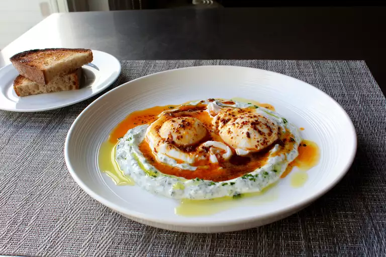

A simple but tasteful dish made with poached eggs, yogurt and spices.
Ingredients
Yogurt Spread:
- 1 cup yogurt
- 1 clove garlic
- ½ teaspoon freshly ground black pepper
- ¼ teaspoon salt, or to taste (Optional)
- 1 pinch cayenne pepper
- 2 ½ tablespoons finely chopped fresh dill, or to taste
Aleppo Butter:
- ½ stick unsalted butter
- 1 tablespoon Aleppo chili flakes
- ½ teaspoon smoked paprika
- ¼ teaspoon ground cumin
Poached Eggs:
- 1 tablespoon white vinegar, or as needed
- 4 large eggs
- 1 pinch sea salt
Steps
- Make yogurt spread: Place yogurt in a medium bowl and grate in garlic; mix to combine. Season with pepper, salt, and cayenne. Add dill and mix thoroughly. Set aside at room temperature.
- Make Aleppo butter: Melt butter in a saucepan over medium heat; heat until bubbles begin to burst. Add chili flakes, paprika, and cumin. Stir until color is uniform. Turn off heat and let spices infuse.
- Make poached eggs: Fill a large saucepan with 2 to 3 inches of water and bring to a boil. Reduce heat to medium-low, add vinegar, and keep water at a gentle simmer. Crack an egg into a small bowl, then gently slip egg into water, holding the bowl just above surface of water. Repeat with remaining eggs. Cook until whites are firm and yolks have thickened but are not hard, 2 1/2 to 3 minutes. Remove with a slotted spoon, pat dry on a kitchen towel, and place onto a warm plate.
- Dollop yogurt mixture onto serving plates. Use the back of a spoon to spread yogurt, carving ridges into the top to catch oil. Top with eggs and 1 to 2 spoonfuls of Aleppo butter. Sprinkle sea salt on top.